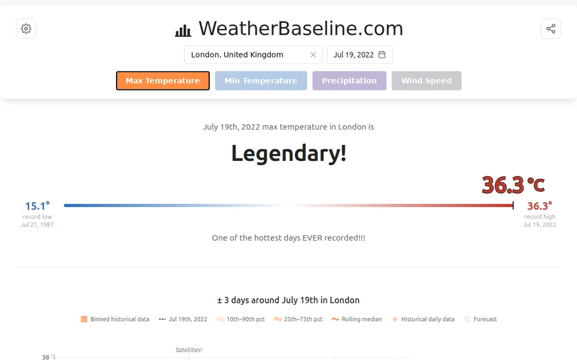
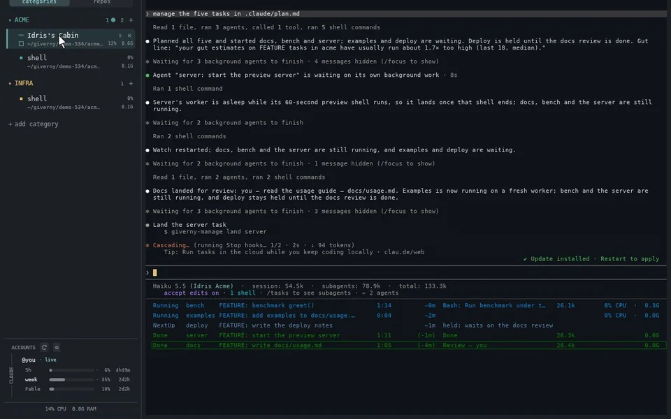

-

Genomic Mutation Viewer
Shows the DNA around well-known cancer mutations, coloured by how variable each base is across 9 gnomAD populations.
Watch the demo video -

WeatherBaseline
How unusual a day's weather really is, ranked against every version of that day since 1950 in ERA5 reanalysis data.
weatherbaseline.com -

ToLaD
A zoomable tree of life where every leaf is an individual organism, alive or dead.
theitush.github.io/ToLaD -

Giverny, manager fork
Adds a manager to the Giverny terminal. It runs Claude Code worker agents in parallel, with time estimates that learn from history and a shared RAM budget.
github.com/theitush/givernyFork of y0av/giverny